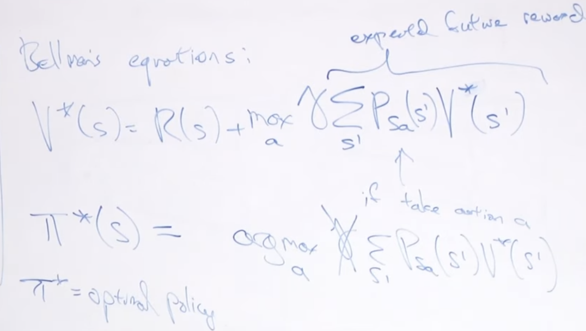
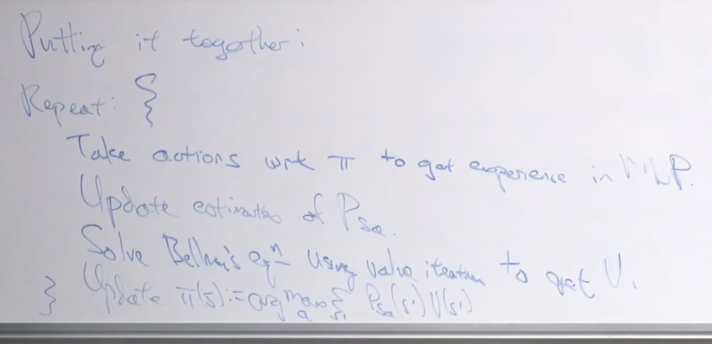

Lec 17-MDPs-Value Policy Iteration
Contents
Lec 17-MDPs-Value Policy Iteration¶
Outline¶
Reinforcement Learning
MDP (recap)
Value function
Value iteration/Policy iteration
Learning state transition probability/putting it all together
Value function for policy \(\pi\)¶
One of the challenges of finding optimal policy is if we have 11 states and 4 actions, there is a exponentially large number of possible policies \(4^{11}\)
how to find the best policy
we need to define 3 things
\(V^{\pi}\) - For policy \(\pi\), \(V^{\pi}: S \mapsto R \) is s.t. \(V^{\pi}(s)\) is the expected total payoff for starting in state s and executing \(\pi\) (take actions according to policy \(\pi\)) is
\(V^{\pi}(s) = E[R(s_{0}, a_{0}) + \gamma R(s_{1}, a_{1}) + \gamma^{2} R(s_{2}, a_{2}) + ... | \pi, s_{0}=s]\)
\(V^{\pi}\) is called “Value function for policy \(\pi\)”
\(V^{*}\) - is the optimal value function
\(\pi^{*}\) - is the optimal policy
+1/-1 - is called absorbing state. there is no more policy once it reaches to this state
Bellman’s equation¶
governs the value function
The intution is - robot woke up at \(s_{0}\) state, the reward you get is \(R(s_{0})\), which is the immediate reward. Then it takes some action and ends up at state \(s_{1}\), the future reward you get is \(\gamma R(s_{1})\). And then \(\gamma R(s_{2})\) and so on. given that we execute the policy \(\pi\) and we start off in this state \(s_{0}\). This can be written as:
\(\begin{equation}\\ \begin{aligned}\\ V^{\pi}(s) &= E[R(s_{0}) + \gamma R(s_{1})+ \gamma^{2} R(s_{2}) + .. |\pi, s_{0}]\\ &= E[R(s_{0}) + \gamma \{ R(s_{1})+ \gamma^{1} R(s_{2}) + ..\} |\pi, s_{0}]\\ &= E[R(s_{0}) + \gamma V^{\pi}(s_{1}) |\pi, s_{0}]\\ \end{aligned}\\ \end{equation}\\ \)
the bellman’s equation says that the expected total payoff you get if the robot wakes up at state s is the immediate reward plus gamma times the expected future rewards
the mapping between these two equation will be:
\(s \rightarrow s_{0}\)(current state), \(s' \rightarrow s_{1}\)(future state).
So the equation with relevant mapping will be:
\(V^{\pi}(s) = E[R(s) + \gamma V^{\pi}(s')]\)
What is s’ drawn from which distribution?
\(s' \sim P_{s \pi (s)}\)
in state s, take action \(a=\pi(s)\). so the distribution from which s’ is drawn from
\(s' \sim P_{s a}\)
so the bellman equation becomes:
\(V^{\pi}(s) = R(s) + \gamma\sum\limits_{s'\in S}P_{s\pi(s)}(s')V^{\pi}(s')\)
given \(\pi\), this gives us a linear system of equation in terms of \(V^{\pi}(s)\)
the unknown variables gives us a system of 11 linear equations with 11 unknowns
can use linear algebra solver to solve this
Optimal Value Function V*¶
Look at all the possible combinatorial exponential policies for this MDP, and the max of all policies is the optimal value function
\(V^{*}(s) = \max\limits_{\pi}V^{\pi}(s)\)
Bellman’s equation¶
there is a different version of Bellman’s equation
\(V^{\pi}(s) = R(s) + \max\limits_{a}\gamma\sum\limits_{s'\in S}P_{sa}(s')V^{*}(s')\)
Optimal policy¶
Lets say we have a way of how to calculate \(V^{*}\)
\(\pi^{*}\) is the optimal policy
 $\tiny{\text{YouTube-Stanford-CS229-Andrew Ng}}$\(\pi^{*} = \text{arg}\max\limits_{a}\sum\limits_{s'\in S}P_{sa}(s')V^{*}(s')\)
For every \(\pi\), s; the optimal value for state S is equal to
\(V^{*}(s) = V^{\pi *}(s) \ge V^{\pi}(s)\)
Strategy for finding optimal policy¶
a) find \(V^{*}\)
b) use arg max equation to find \(\pi^{*}\)
Value Iteration¶
Value iteration gives us the \(V^{*}\). The algorithm is as follows. It uses synchronous or asynchronous update. synchronous update is the more common one, where you update all 11 values at the same time.
Policy Iteration¶
the focus is policy rather than value
solve for the value function for the policy \(\pi\), which was linear system of equations \(V^{\pi}\)
assume V is the optimal value function and update \(\pi(s)\), using Bellman’s equation
iterate until it converges
Pros and cons¶
policy iteration
is relatively easy for small state space
value iteration
is relatively better for large state space
State transition probability¶
is not known in advance
estimate \(P_{sa}(s')\) from data
 $\tiny{\text{YouTube-Stanford-CS229-Andrew Ng}}$\(P_{sa}(s') = \frac{\text{# times took action a in state s and got to state s'}}{\text{# times took action a in state s}}\)
Exploration vs Exploitation¶
may converge to a local optima
exploitation
how aggressive or how greedy you should be at taking actions to maximize your rewards
exploration
the process of taking actions that may appear less optimal at the outset, maybe if it tries some new things it’s never tried before, maybe it will find a new thing
this is the exploitation/exploration trade-off
epsilon-greeedy¶
0.9 chance wrt \(\pi\)
0.1 chance act randomly
Search for “intrinsic motivation”